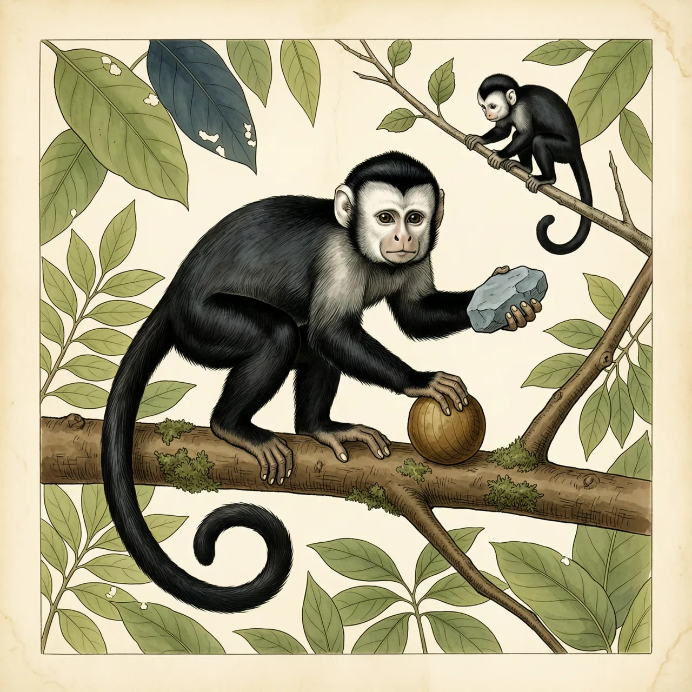
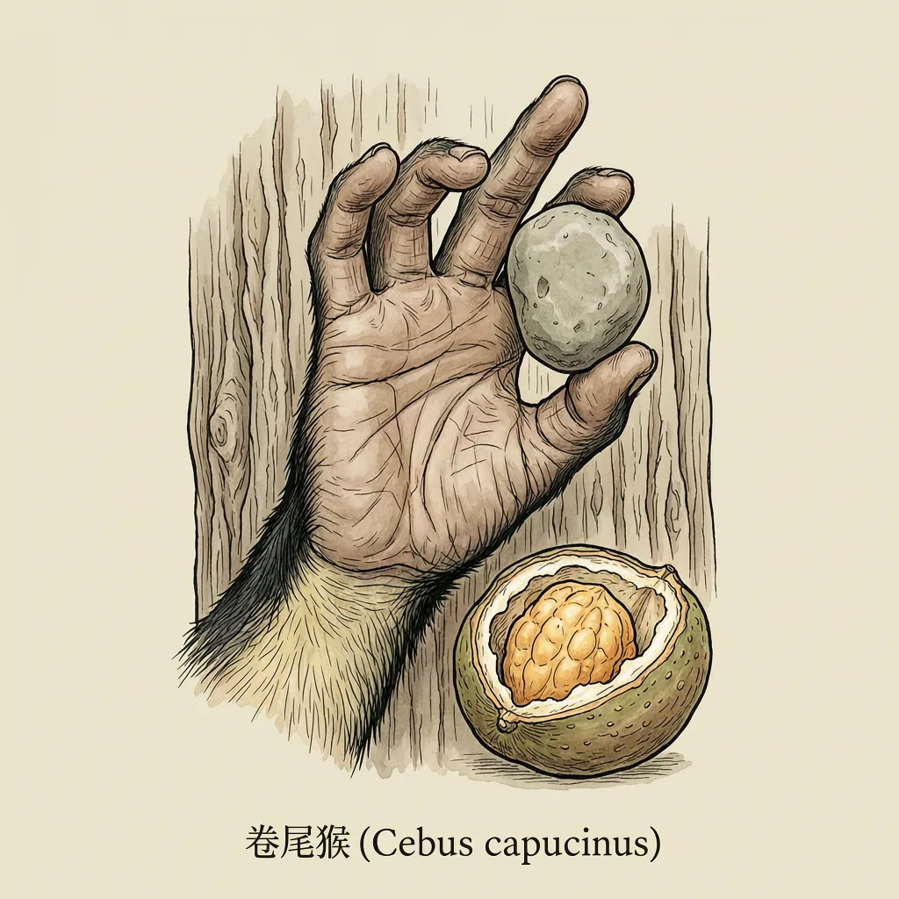

卷尾猴是南美与中美洲雨林里的小型新世界猴，黑毛、白脸，尾巴比身体还长。它们白天在树冠上成群觅食，一群可达20头，活动区域最大约86万平方米。最有名的一招是捡起石头砸开咬不动的硬壳果实，而它们繁殖得很慢，一胎只生一个。
天亮不久，一群二十头上下的卷尾猴就在枝叶间动了起来，一天里大部分时间都花在找吃的上。卷尾猴分布在南美洲和中美洲的雨林，是小型的新世界猴，也是彻底的树栖动物：雨林的树冠一层接一层，够它们不落地走完很大的范围。这个范围弹性很大，一个卷尾猴群体的活动区域从32万平方米到86万平方米都有。体重3.9公斤、体长最多43.5厘米的卷尾猴在枝叶间上下穿行，靠的是一条比身体还长的尾巴，最长能到55厘米；尾巴卷起来的样子，就是它名字的来处。
硬壳的果实和坚果是卷尾猴食谱里最难对付的一类，牙齿咬不开。它们的办法是捡起石头砸，把壳砸裂再吃。挡得住别的动物的那层壳，挡不住卷尾猴。它们也不挑，果实之外，鸟蛋和树上的雏鸟都会进嘴，带壳的贝类同样用石头对付。做这些事的，是一只脑重79克的小脑袋，锚里给它的评价是非常聪明——聪明落在很具体的地方：别人吃不到的那一层食物，卷尾猴吃得到。
砸得开硬壳的卷尾猴，繁殖得很慢。雌猴怀孕157到167天，一胎只生一个，两胎之间至少隔开19个月。幼猴约12个月断奶，2到3岁性成熟，但要8年才算完全成年。性成熟与完全成年之间隔着五六年，这段时间在15到25年的野外寿命里占了不小的一块。等一只雄性卷尾猴真正成年，它还会离开自己出生的那一群。算下来，一只雌猴一生能添进群体的后代本来就没几个。
